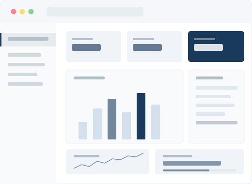
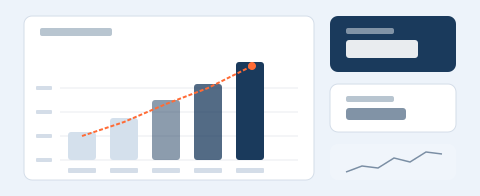
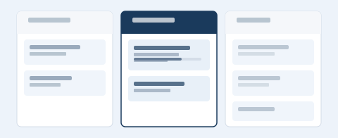
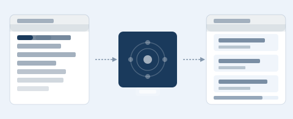

8
件
要件定義から運用保守まで
すべて一貫対応
100
%
担当者変更なし
一人で最後まで責任を持つ
全国
リモート対応可
場所を問わず対応
Works
実績
01
出勤簿・勤怠管理システム開発
- 毎月の作業を大幅に簡略化
- 入力ミス・作業漏れを削減
- 誰でも同じ手順で作業できる状態を構築

02
売上管理システム開発
- 売上情報を一元管理できる状態に改善
- 集計作業の手間を大幅削減
- 管理者が状況を確認しやすい仕組みを構築

03
日報・進捗管理システム開発
- 日報・進捗状況を一元管理
- 管理者の確認工数を削減
- 業務状況を見える化

04
SEO記事自動化システム構築
- 記事作成の初期工数を大幅削減
- SEOコンテンツ運用を継続しやすく改善
- 人手だけに依存しない記事作成フローを構築
Services
何をするのか
01
本来やりたい業務に集中するためのシステム開発
同じ入力作業を何度もしている、情報がバラバラに管理されている。そういった「なんとなく不便」な状態を改善します。システムにかけるお金を、本来使いたい部分に戻します。
02
既存システムの改善・最適化
「人が頑張らないと回らない」から「仕組みで自然と回る状態」へ。パフォーマンス改善、セキュリティ診断、レガシーシステムの現代化など、現場に合う形で対応します。
03
構想段階からのサポート
「システムが本当に必要か」から一緒に考えます。必要以上に高機能なものは作りません。本当に必要なものを、必要な形で、現場に合う形でつくります。
Why us
だから、信頼される
目的を見ている
システムを導入することが目的ではなく、その会社が本来やりたいことに集中できる状態をつくること。その目的がブレません。
現場から考える
「管理するため」に時間を使うのは、本来の目的ではありません。同じ入力作業、バラバラな情報、人が頑張らないと回らない状態を改善します。
必要なものだけ
派手なDXではなくてもいい。現場が少しラクになる。ミスが減る。対応が早くなる。そういう積み重ねが、結果的に会社を強くすると考えています。
責任を持ってやる
一人で受けた案件は最後まで自分で対応します。本来使いたかった時間・お金・集中力を、本来使いたい部分に戻す。それが約束です。
Profile
tech-iro
システム開発 / 業務改善
スキル
フロントエンド: React, Vue.js, TypeScript
バックエンド: Node.js, Python, Go
インフラ: AWS, GCP, Docker
バックエンド: Node.js, Python, Go
インフラ: AWS, GCP, Docker
対応範囲
要件定義 / 設計 / 開発 / テスト / 運用保守
営業時間
平日 9:00 - 18:00（応相談）
まずは相談する